از کجا شروع کنم؟
بر اساس کاری که میخواهید انجام بدهید.
برای یک مرحله از کارم ابزار میخواهمنقشهی ورکفلو را ببینید، روی دسته بزنید و ابزارهای بررسیشدهاش را مقایسه کنید.
کتابخانهی ابزار ← میخواهم فیلم کوتاه با کد بسازمیکی از ۹۸ سبک را انتخاب کنید، داستان بنویسید و پرامپت آمادهی Claude Code بگیرید.
سبکهای فیلم ← یک کار سریع، همینجا در مرورگرمدل سهبعدی، نمایش Splat، پسزمینهی دستساز یا ایدهی تعاملی؛ بدون نصب.
ابزارهای داخل مرورگر ↓
کتابخانهی ابزار ← میخواهم فیلم کوتاه با کد بسازمیکی از ۹۸ سبک را انتخاب کنید، داستان بنویسید و پرامپت آمادهی Claude Code بگیرید.
سبکهای فیلم ← یک کار سریع، همینجا در مرورگرمدل سهبعدی، نمایش Splat، پسزمینهی دستساز یا ایدهی تعاملی؛ بدون نصب.
ابزارهای داخل مرورگر ↓
بخشهای اصلی
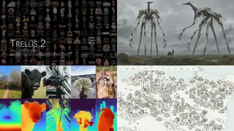
مرجعکتابخانهی ابزار و ورکفلوابزارهای غربالشده با نقشهی ورکفلو، وضعیت تست و نظر.
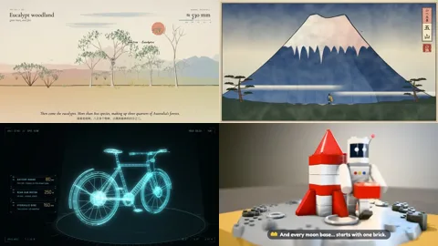
در استفادهسبکهای فیلم (Lemo-Opuscar)۹۸ سبک فیلم کوتاه با کد و سازندهی پرامپت.
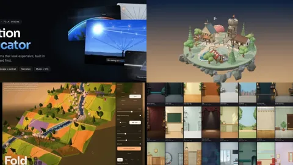
در استفادهکتابخانهی پرامپت۷۰۳ پرامپت واقعی ویدیو با Opus، با سبک پیشنهادی.

جدیدگالری ویدیوهای Claude۵۹۱ اثر واقعی از Opus 5.5 تا Fable 5.2، با مدل و دسته، و راهنمای انتخاب مدل.
ابزارهای داخل مرورگر
بدون نصب و بدون سرور؛ فایلهای شما از مرورگر خارج نمیشوند.
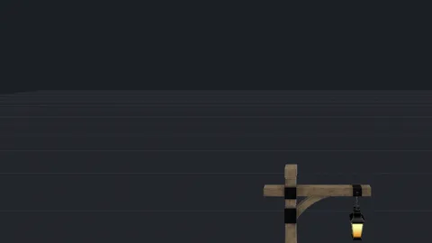
جدیداتاق XRهر مدل Polyfork را در VR یا AR (Quest 3 passthrough، اندروید) با ارتفاع واقعی ببینید؛ با شبیهساز Quest روی دسکتاپ.
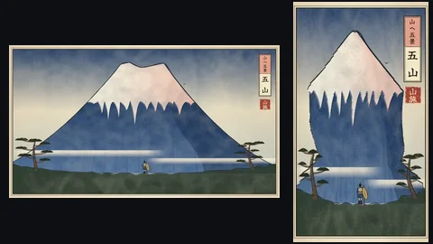
جدیدتغییر نسبت هوشمندSeam Carving داخل مرورگر: ۹:۱۶ و ۳۲:۹ دیوار LED بدون کشیدگی، قلم محافظت و حذف شیء.

جدیدآزمایشگاه عمقDepth Anything داخل مرورگر: depth PNG، پارالاکس 2.5D، عمق میدان با فوکوس لمسی، استریو SBS برای هدست.
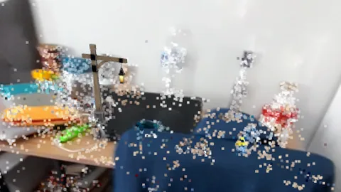
Tested PrototypeAR بدون تارگت (ابرنقاط)نقشهی سهبعدی از یک ویدیو با COLMAP؛ گوشی با PnP جای خودش را پیدا میکند و مدل روی میز واقعی از هر زاویه ثابت میماند. بدون ARCore و ژیروسکوپ.
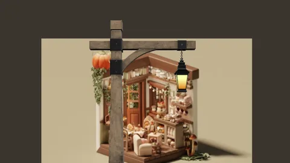
AR روی کارت خودتاز کارت، جلد کتاب یا هر سطح پرجزئیات عکس بگیرید؛ مدل سهبعدی روی همان مینشیند. روی تقریباً هر گوشی، بدون ARCore.
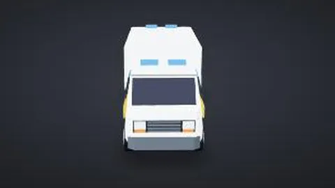
داراییهای سهبعدی۳۴۸۹ مدل GLB رایگان؛ پیشنمایش، دانلود و دیدن در اتاق با AR روی گوشی.
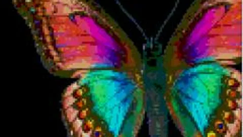
نمایشگر Gaussian SplatPLY/SPZ/SPLAT خودتان؛ pixel-art، کروما، و ورود به VR/AR روی Quest (+ شبیهساز).
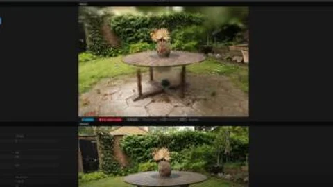
جدیدساخت Gaussian Splat (Brush)آموزش splat از عکس یا دیتاست، در مرورگر و روی هر GPU.
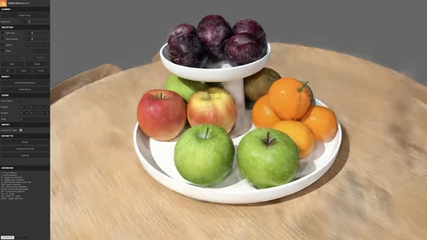
جدیدویرایشگر SuperSplat ↗تمیزکاری، برش، ترکیب و خروجی splat؛ نسخهی میزبانیشده روی همین سایت.
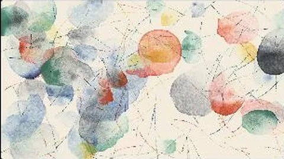
آزمایشگاه قلمموپسزمینه و loop آبرنگی برای تیتراژ و LED wall؛ PNG و WebM.
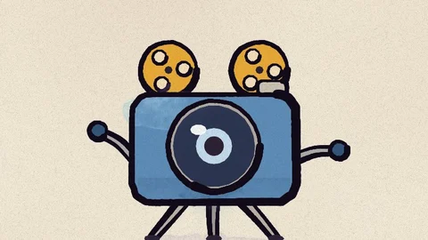
جدیدآزمایشگاه انیمیشنلنزو، رباتدوربین آبرنگی Behrang Lab؛ ۱۵ حالت احساسی، پسزمینه، و خروجی PNG/MP4.
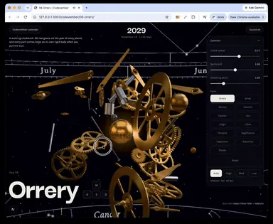
گالری زندهی Codevember۲۱ صحنهی تعاملی three.js بهعنوان مرجع تکنیک.
ابزارهای بیرونی (باز میشوند در سایت سازنده)
سرویسهای بسته یا نیازمند ورود که نمیشود روی این سایت میزبانیشان کرد؛ بررسیشده و در کتابخانه.
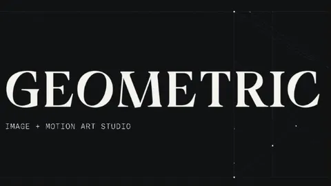
بیرونی ↗GEOMETRICعکس/ویدیو به موشنآرت هندسی؛ پردازش محلی، خروجی MP4 و WebM.
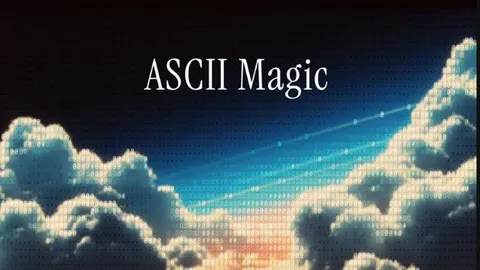
بیرونی ↗ASCII Magicاستایلایزر ASCII، dither، halftone و glitch برای عکس و ویدیو.
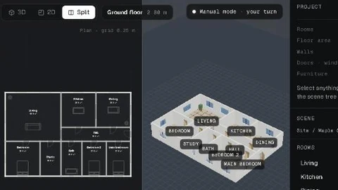
بیرونی ↗Pascal Editorپلان و مدل سهبعدی ساختمان؛ نسخهی آنلاین با ورود، یا محلی:
npx @pascal-app/cli editorاین سایت چیست؟
اینجا یادداشت کاری بهرنگ مظلومی است: ابزارهایی که برای استودیوی مجازی، سهبعدی و فیلمسازی با AI پیدا و بررسی میکنم. «پای سیستم تست شود» یعنی هنوز روی سختافزار واقعی آزموده نشده؛ نتیجهی تستها بهتدریج روی هر کارت ثبت میشود. تصاویر و ابزارها متعلق به سازندگانشان هستند و به منبع اصلی لینک شدهاند.